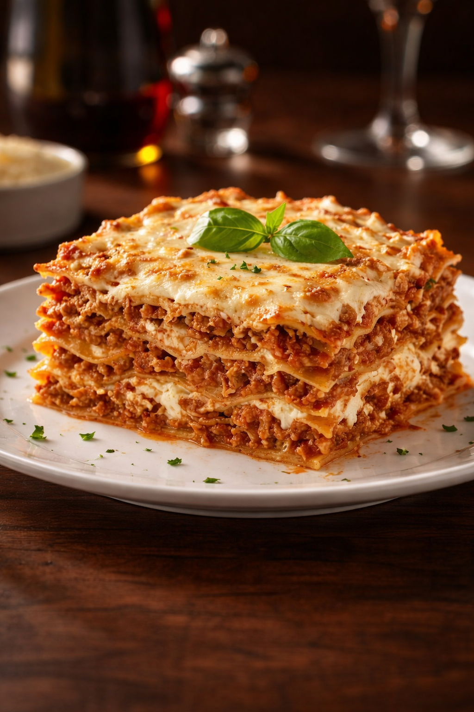

Cereal Magazine Editorial
Italian and West African home cooking, delivered hot across Middlesbrough.

Today's pick
Jollof & Plantain
£10
£10
Fragrant tomato-based jollof rice with your choice of chicken, beef or fish, alongside caramelised fried plantain. A 7-minute drive from kitchen to your door once it's cooked. No frozen meals.
Today's kitchen
 № 02 · Pasta
№ 02 · Pasta
Plantain Lasagna
A twist on classic lasagna, layered with sweet ripe plantain, seasoned mince and béchamel.
£25
 № 04 · Grill
№ 04 · Grill
Suya Sticks
Smoky, peppery grilled beef skewers in a bold spice blend, with sliced onions and tomatoes.
£5

№ 01 · PastaClassic Lasagna
Oven-baked pasta layered with rich meat sauce, creamy béchamel, and golden melted cheese.
£20
№ 07 · Snacks
Small Chops Platter
Bite-sized party favourites: puff-puff, samosa, spring rolls, peppered chicken.
£25